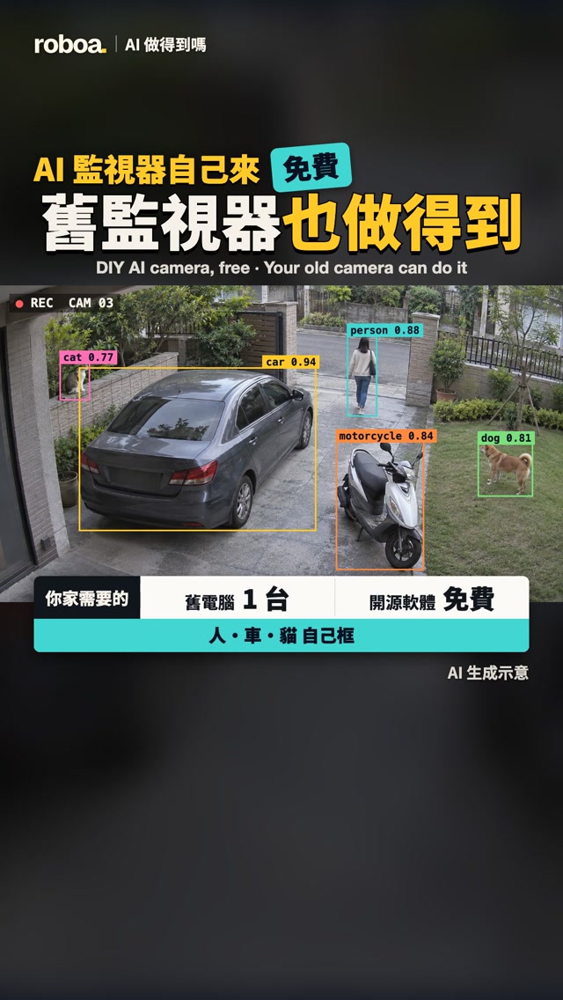

Threads｜Roboa AI：舊監視器與 Frigate 本地 AI 偵測的可行性與限制
舊監視器加 Frigate：本地 AI 偵測可以做什麼？

一句話摘要
開源 NVR Frigate 可處理相容的攝影機串流及物件偵測，但「免費軟體」不代表硬體、儲存、電力及維護都免費，也不能保證所有相機或功能均相容。
貼文與留言的來源歸屬
2026-11-03 查閱，Roboa AI 主文提出三樣：能輸出畫面、可查 RTSP 的監視器；8GB 記憶體、Intel 第六代以後的舊電腦；以及 Frigate。這是作者提供的起點，不是所有 Frigate 系統的硬性門檻。作者另回覆 Mac mini 可搭配 Docker 與 Apple 偵測器、文字搜尋最好 16GB。另一位留言者 sam_lung2077 分享 go2rtc 搭配 Frigate 的經驗；作者表示值得一試。這是社群經驗，不保證所有私有協定均可接入。
作者續文所指完整影片：https://youtu.be/c0bBVL5cVsA ，長 6 分 15 秒。影片說明列出 00:33 商業 AI 監視器功能、01:23 技術、02:13 舊電腦、03:30 相機串流、03:50 訓練辨識、04:22 AI 協助安裝；這些是作者的章節標題而非逐字稿摘要。說明欄註明畫面為示意、AI 偵測框與文字後製、部分畫面為 AI 生成；不能拿畫面當真實偵測效能證據。作者亦建議勿將 RTSP 開到外網或把密碼、家庭網址交給線上 AI。
逐字稿限制：YouTube 頁面顯示未提供字幕，工具以中文與英文語言鏈及預設語言重試均回報無法取得逐字稿；雖說明欄聲稱附英文字幕，本次無法驗證。未能閱讀完整旁白，本文僅根據公開影片說明、章節與官方文件，不聲稱完整觀看或逐字整理。
官方文件核查（2026-11-03）
- 授權與成本：Frigate 程式庫 LICENSE 為 MIT；另有 Frigate+ 等服務，第三方模型、硬體、耗電、硬碟或外部服務可能另有費用或各自授權。MIT 不代表所有第三方模型都是 MIT。
- 安裝：官方以 Docker 容器為主，也可作 Home Assistant App；推薦適合硬體直通的環境，Windows 非官方支援。這次僅查文件，沒有安裝或部署監控軟體。
- 硬體：官方列舉多種 Intel、AMD、NVIDIA、Apple Silicon、Coral 等平台與加速器，具體取決於型號、模型與部署；Intel 第六代、8GB 並非所有用途的通用最低規格。鏡頭數、解析度、影格率、錄影保存期和加速器均會影響需求。
- Mac：Mac mini 有不同晶片，Apple Silicon 偵測器支援 M1 及之後的 Apple Silicon；Intel Mac 不適用此偵測器。官方指出 NPU 不能由容器直接使用，需在 macOS 主機、Docker 容器外執行 Apple Silicon Detector 客戶端，並配置連線；macOS 的 AirPlay 可能佔用 5000 埠，若需該埠須另行映射。偵測器與影片解碼加速、語意搜尋是不同工作負載，不能假設自動共用加速。
- 語意搜尋：官方文件列最低 8GB RAM，並列 CPU 需 AVX/AVX2，建議 16GB 以上與獨立 GPU 以獲較佳表現；此處所述指語意搜尋功能，不是所有 Frigate 安裝門檻，也不應直接假定 Mac Apple Silicon 滿足該 CPU 指令條件或其加速支援。Mac 實際支援請依當前版本與文件確認。
- 偵測器：可依硬體選擇 Apple Silicon、OpenVINO、Coral 等；官方不建議以一般 CPU 的 TFLite 模式作實際用途，且同一物件偵測工作不能混用不同偵測器類型。不同模型與加速器須按官方相容清單核對。
- go2rtc：Frigate 文件說它支援多種串流，不只 RTSP，並可用 restream 減少相機連線；新增相機精靈可能已自動設定。是否支援某品牌封閉協定、驗證方式、編碼與韌體需逐型號查證，不是通用破解工具。
隱私與實作前檢核
- 確認有權拍攝、遵守所在地個資與監視法規，避免拍到鄰居私人空間；人臉和車牌尤其敏感。
- 相機與管理介面限制在可信任內網、設強密碼和更新韌體；不要直接把 RTSP、未認證 API 或管理埠暴露在網際網路。遠端需求先評估安全 VPN 與權限。
- 最小化保留期限、加密備份並限制存取；不要把影像、憑證、內網地址或設定檔貼給雲端 AI。誤報漏報不可當成安全保證。
- 先核對相機型號的輸出協定、編碼、效能與儲存，並核算電費；參考官方文件，不執行未審核腳本。
來源
- 原分享：https://www.threads.com/share/_7d3haLM5
- 原貼文：https://www.threads.com/@roboa.ai/post/DfRx2oUk-Vv
- 作者影片續文：https://www.threads.com/@roboa.ai/post/DfRx4EpE69h
- 他人 go2rtc 留言：https://www.threads.com/@sam_lung2077/post/DfR0vA3GsJR
- 作者 Mac 回覆：https://www.threads.com/@roboa.ai/post/DfR9vYBkm9t
- 影片與公開說明：https://www.youtube.com/watch?v=c0bBVL5cVsA
- Frigate 授權：https://github.com/blakeblackshear/frigate/blob/dev/LICENSE
- 安裝：https://docs.frigate.video/frigate/installation/
- 硬體：https://docs.frigate.video/frigate/hardware/
- 偵測器：https://docs.frigate.video/configuration/object_detectors/
- 語意搜尋：https://docs.frigate.video/configuration/semantic_search/
- go2rtc：https://docs.frigate.video/configuration/go2rtc/
相關專題：既有 DIY AI 嬰兒監視器文章討論另一套 OpenCV／Firebase／LINE 架構，與本篇 Frigate 專題不同，故分開保存。